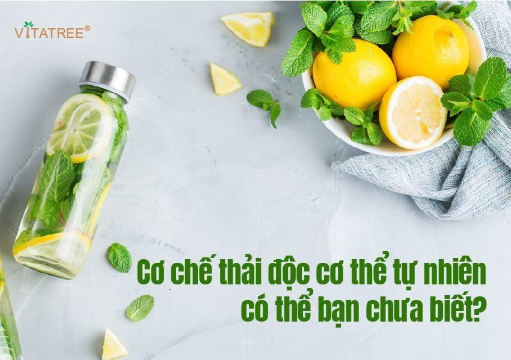
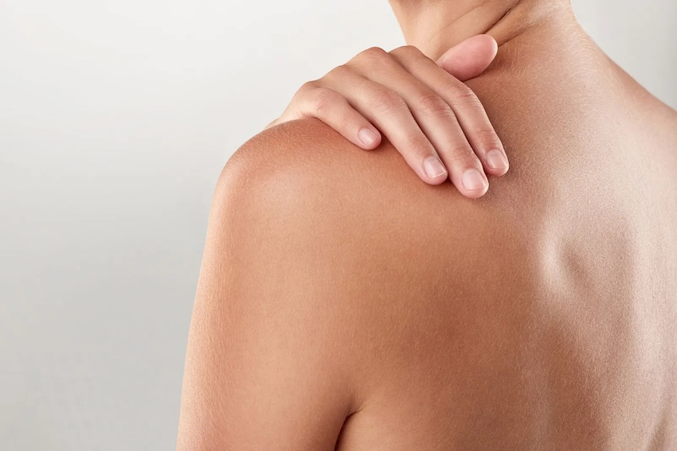
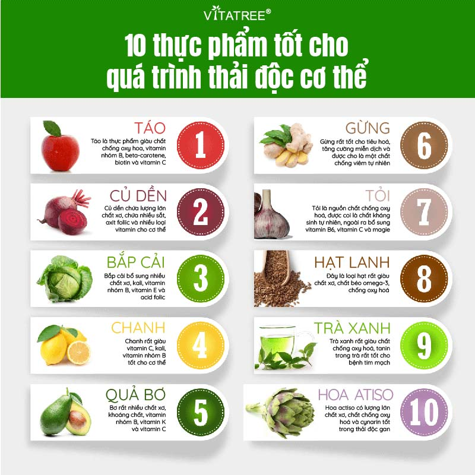

Kim Long
- kimlongpress@gmail.com
Kim Long
- kimlongpress@gmail.com
Cơ chế thải độc cơ thể tự nhiên có thể bạn chưa biết!
Thải độc cơ thể là một quá trình diễn ra tự nhiên trong cơ thể, là sự phối hợp của các cơ quan. Tìm hiểu tại sao cơ thể cần phải thanh lọc thải độc và làm cách nào mà quá trình này giúp cải thiện sức khoẻ tổng thể?
 Nguyên nhân và cơ thế thải độc cơ thể là gì?Vì sao phải thải độc cơ thể?
Giải độc cơ thể hay thải độc hoặc detox cơ thể thực ra là cùng một nghĩa, chỉ quá trình giúp cơ thể bạn loại bỏ các chất độc hại khác nhau. Trong cơ thể chúng ta, luôn có sẵn các cơ quan và hệ thống thực hiện vai trò này như gan, ruột, da, hệ thống bạch huyết và phổi.
Cơ thể thải độc qua đường nào?
Thải độc cơ thể là một quá trình kết hợp các bộ phận khác nhau, tập trung chủ yéu ở gan. Gan có hơn 500 chức năng, hoạt động tương tự như một bộ lọc chất độc hại ra khỏi cơ thể.
Thải độc qua gan
Các tế bào nhỏ cấu thành nên mô gan, mỗi mô gan lại có nhiều kênh dẫn máu gồm cả mật chạy ở giữa. Máu từ các cơ quan trong hệ tiêu hoá chảy về gan qua tĩnh mạch giữa, trong đó có cả chất dinh dưỡng và chất độc hại.Gan có chức năng hấp thu chất dinh dưỡng và đào thải chất độc hại tống ra khỏi cơ thể chúng ta.
Thải độc qua da
 Thải độc qua da là một phần của quá trình thanh lọc cơ thểThải độc da là loại bỏ độc tố tích tụ sâu dưới da, giúp làm thông thoáng lỗ chân lông, tăng cường lưu thông máu, kích thích sợi collagen hoạt động và giúp ngừa mụn cho làn da hồng hào căng mịn. Thải độc da cũng giúp chống lại quá trình chống oxy hoá, ngăn chặn các gốc tự do gây hại làm cho làn da nhiều vết nhăn, các vết sạm nám.
Thải độc qua thận
Thận có chức năng chính là lọc máu và chất thải. Các chất khi đi vào cơ thể, sau khi trải qua quá trình tiêu hoá rồi chuyển hoá sẽ lọc lại ở thận, để giữ lại protein và các tế bào máu, còn thì sẽ được tiết ra dịch lọc để hình thành nước tiểu đào thải ra ngoài. Vì thế, thận cũng là một cơ quan giúp cơ thể loại bỏ chất dư thừa và độc tố để đản bảo sức khoẻ.
Thải độc qua phổi
Phổi hoạt động liên tục để loại bỏ các loại không khí độc hại ra khỏi cơ thể. Tổng thể các cơ quan sẽ làm việc phối hợp cùng nhau để giúp cho thanh lọc các độc tố ra khỏi cơ thể sau cho hiệu quả nhất. Nhưng cũng sẽ có những giai đoạn cơ thể con người tiếp xúc quá nhiều với chất độc hại mà các cơ quan không giải độc được kịp thời, gây ra giảm sút sức khoẻ. Khi đó, chúng ta cần một biện pháp giúp tăng cường chức năng giải độc thanh lọc cơ thể cho các cơ quan này.
Biểu hiện cơ thể đang thải độc
Mệt mỏi là một biểu hiện cơ thể bạn đang thải độcTrong quá trình thải độc cơ thể, bạn sẽ thay đổi chế độ ăn uống hàng ngày để áp dụng các chế độ ăn uống chuyên biệt. Việc giảm ăn uống kéo theo tình trạng mệt mỏi, nhanh đói khiến nhiều người chán nản mà không tiếp tục theo đuổi chế độ detox nữa. Nhưng mệt mỏi có thể là dấu hiệu cơ thể bạn đang thải độc đúng cách. Nhận biết một số dấu hiệu chứng tỏ cơ thể bạn đang thanh lọc chất độc ra ngoài hiệu quả:
Mệt mỏi và đau nhức cơ thể
Bạn có thể cảm thấy vừa đau họng, nhức mỏi người kèm theo mệt mỏi. Đây có thể chính là hệ quả của khi hệ miễn dịch phản ứng với chất độc hại. Có thể uống các loại trà từ thảo dược để giảm các triệu chứng khó chịu này.
Xuất hiện mùi hôi
Đổ mồ hôi nhiều là một trong những các giúp loại bỏ độc tổ. Khi cơ thể tích tụ nhiều độc tố có thể xuất hiện mùi hôi. Việc uống nhiều nước và ăn nhiều loại rau quả sẽ giúp thanh lọc cơ thể, đi tiểu nhiều đồng thời giảm mùi hôi cơ thể.
Thay đổi tâm trạng
Áp dụng chế độ thanh lọc có thể khiến tâm trạng bạn bị kích thích trong những ngày đầu. Bởi xuất hiện nhiều thay đổi trong quá trình trao đổi chất, thèm ăn, thay đổi nhịp sinh học.
Da có mụn và xỉn màu
Da có màu vàng nhẹ hoặc nổi mụn có thể chính là dấu hiệu gan đang thải độc ra ngoài. Hơn nữa, da mặt sần sùi, thô ráp cũng là một dấu hiệu chứng minh làn da đang tự thải độc qua lỗ chân lông.
Khung thời gian giải độc của cơ thể
Các cơ quan sẽ có các khung thải độc khác nhauThực tế, các cơ quan trong cơ thể vẫn đang làm việc thường xuyên để thải độc ra khỏi cơ thể mỗi ngày. Sẽ có các khung giờ để mỗi hệ cơ quan lại thực hiện nhiệm vụ khác nhau vào thời gian từ tối tới đêm.
Tham khảo khung giờ thải độc của từng bộ phận, bạn có thể thấy phần lớn đều rơi vào khoảng thời gian ban đêm khi ngủ. Chính vì thế mà việc ngủ đủ giấc, đúng giờ cũng là một phần khá quan trọng trong thanh lọc cơ thể giúp cơ thể duy trì phong độ khoẻ mạnh.
Tần suất nên áp dụng chế độ giải độc thanh lọc cơ thể
Theo chuyên gia thì tần suất bạn áp dụng các chế độ giải độc sẽ phụ thuộc vào lượng độc tố bạn tiếp xúc mỗi ngày. Đối với những người thường xuyên bỏ bê sức khoẻ, liên tục ăn các loại đồ ăn chế biến sẵn, đồ nhiều đường thì nên cân nhắc thải độc thường xuyên hơn.
Ngược lại, những người có chế độ ăn cân bằng và có kết hợp tập luyện thể thao thường xuyên thì đôi khi cũng không cần tới quá trình thải độc. Tuy nhiên, bạn cũng có thể thử áp dụng một số chế độ ăn detox nếu như cảm thấy sức khoẻ tốt lên thì có thể kết hợp trong đời sống hàng ngày.
Thông thường, mỗi người cần thực hiện quá trình thải độc cơ thể mỗi tháng 1 lần, thực hiện liên tục trong một tuần. Tuy nhiên những người cảm thấy cơ thể khoẻ mạnh thì có thể giãn ra xa hơn như: 2 – 3 tháng thực hiện một lần, 1 năm thực hiện 1 tới 2 lần.
Một số loại rau củ quả tốt cho quá trình thanh lọc cơ thể bạn có thể xem ở ảnh sau:
 Các loại thực phẩm bạn có thể đưa vào chế độ detoxBí quyết giúp cơ thể thải độc tố trong cơ thể an toàn hiệu quả
Bạn có thể áp dụng các công thức ăn hoặc uống nước detox để thực hiện trong thời gian giải độc cơ thể. Tuy nhiên, bạn nên tuân thủ các nguyên tắc sau để giúp cơ thể khoẻ mạnh dài lâu.
1. Hạn chế uống rượu bia
Gan sẽ chuyển hoá hơn 90% lượng rượu mà bạn tiêu thụ. Men gan sẽ chuyển hoá rượu thành acetaldehyde – loại chất gây ung thư. Nhận ra được chất độc này, gan sẽ chuyển hoá thành một chất vô hại – axetat, rồi loại bỏ ra khỏi cơ thể.
Trong khi nhiều nghiên cứu chỉ ra rằng uống một lượng rượu nhỏ đem lại nhiều lợi ích cho sức khoẻ tim mạch, thì uống nhiều rượu bia sẽ đem đến nhiều hệ luỵ về mặt sức khoẻ.
Uống bia rượu quá nhiều làm tổn hại nghiêm trọng tới chức năng gan bởi sẽ gây tích tụ chất béo, viêm nhiễm và để lại sẹo.
Khi đó, gan sẽ không thể thực hiện được đầy đủ chức năng thanh lọc giải độc cơ thể cho bạn.
Hạn chế hoặc kiêng uống rượu bia là một trong những cách giúp cho hệ thống giải độc trong cơ thể làm việc hiệu quả.
2. Ngủ đủ giấc
Cũng như khung thời gian giải độc ở trên bài viết có đưa ra, thời gian ngủ vô cùng quan trọng. Đây chính là khi các cơ quan trong cơ thể đang làm việc mạnh mẽ để tổ chức, tái tạo năng lượng và loại bỏ chất độc hại tích tụ cả ngày dài.
Khi bị thiếu ngủ, cơ thể bạn không có thời gian để thực hiện được các chức năng đó, nên độc tố vẫn tích tụ lại và phần nào ảnh hưởng tới sức khoẻ ban thân.
Nên duy trì giấc ngủ 7 – 9 tiếng mỗi ngày để đảm bảo sức khoẻ.
3. Uống nhiều nước
Nước rất quan trọng đối với sức khoẻ nói chungNước có nhiều chức năng đối với cơ thể như: giảm cơn khát, điều chỉnh nhiệt độ cơ thể, bôi trơn khớp, hỗ trợ tiêu hoá, hấp thụ chất dinh dưỡng đồng thời giúp loại bỏ độc tố ra khỏi cơ thể.
Bởi cơ thể chúng ta liên tục tự làm việc để tối ưu hoá hoạt động và phân huỷ các chất dinh dưỡng tạo thành năng lượng. Trong quá trình này sẽ giải phóng chất thải dạng ure và CO2 gây hại nếu tích tụ trong máu. Nước giúp vận chuyển các chất này và giải phóng chúng qua tiểu tiện, hơi thở hoặc đổ mồ hôi.
Chính vì thế mà uống đủ mỗi ngày 3 lít nước là vô cùng quan trọng.
4. Giảm lượng đường và đồ ăn chế biến sẵn
 Nên lựa chọn các thực phẩm giàu chất xơ và vitamin
Nên lựa chọn các thực phẩm giàu chất xơ và vitamin
Tiêu thụ đồ ăn nhiều đường, đồ ăn chế biến sẵn làm gia tăng khả năng béo phì hay mắc các bệnh mạn tính (tiểu đường, huyết áp, ung thư). Các loại bệnh này có khả năng cản trở quá trình giải độc tự nhiên do gây hại cho gan và thận.
Lời khuyên cho bạn là hãy hạn chế ăn vặt bằng cách không trữ sẵn chúng tại nhà. Thay thế đồ ăn chế biến sẵn bằng trái cây và nước ép rau quả sẽ tốt cho sức khoẻ hơn.
5. Giảm lượng muối trong đồ ăn
Tiêu thụ quá nhiều muối khiến cơ thể bạn dễ bị trữ nước, đặc biệt đối với người có vấn đề về gan thận. Khi đó, bạn cần tăng lượng nước uống để giải phóng lượng nước dư thừa đang bị giữ lại cơ thể do ăn quá nhiều muối.
Nếu không bổ sung đủ nước khi tiêu thụ quá nhiều muối, cơ thể bạn sẽ tiết ra loại hormone chống bài tiết, cản trở bạn đi tiểu khiến khó có thể thải độc được khỏi cơ thể.
6. Sử dụng sản phẩm giải độc cơ thể từ các thành phần tự nhiên
Bên cạnh thay đổi chế độ ăn uống sinh hoạt thì bạn cũng có thể tham khảo sử dụng các sản phẩm thải độc có thành phần từ thiên nhiên. Bởi trong tự nhiên cũng có một số loại thảo dược tốt quá trình thanh lọc gan thận như cây kế sữa, tốt cho hệ tiêu hoá như lô hội, tốt cho quá trình oxy hoá như trà xanh.
Có thể lựa chọn sản phẩm thải độc cơ thể từ các thành phần kế sữa, lô hội, trà xanh kết hợp các thành phần khác. Ngoài ra bạn nên ưu tiên các sản phẩm đã được sử dụng và đánh giá cao bởi người dùng trong và ngoài nước.
6. Sử dụng sản phẩm giải độc cơ thể từ các thành phần tự nhiên
Bên cạnh thay đổi chế độ ăn uống sinh hoạt thì bạn cũng có thể tham khảo sử dụng các sản phẩm thải độc có thành phần từ thiên nhiên. Bởi trong tự nhiên cũng có một số loại thảo dược tốt quá trình thanh lọc gan thận như cây kế sữa, tốt cho hệ tiêu hoá như lô hội, tốt cho quá trình oxy hoá như trà xanh.
Có thể lựa chọn sản phẩm thải độc cơ thể từ các thành phần kế sữa, lô hội, trà xanh kết hợp các thành phần khác. Ngoài ra bạn nên ưu tiên các sản phẩm đã được sử dụng và đánh giá cao bởi người dùng trong và ngoài nước.


Bình luận (99+)